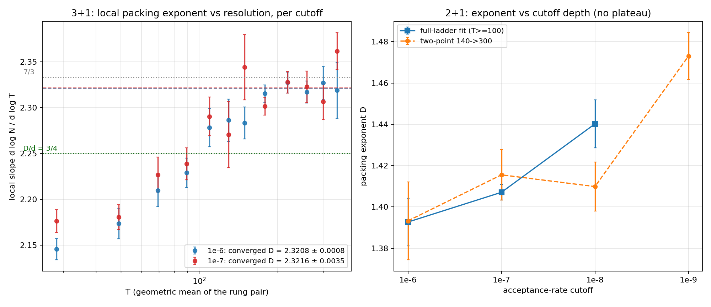
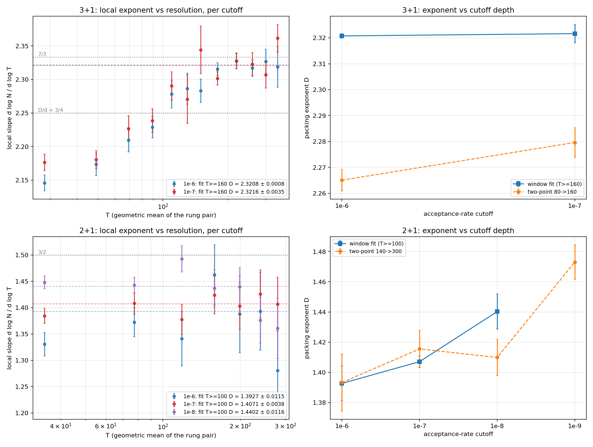
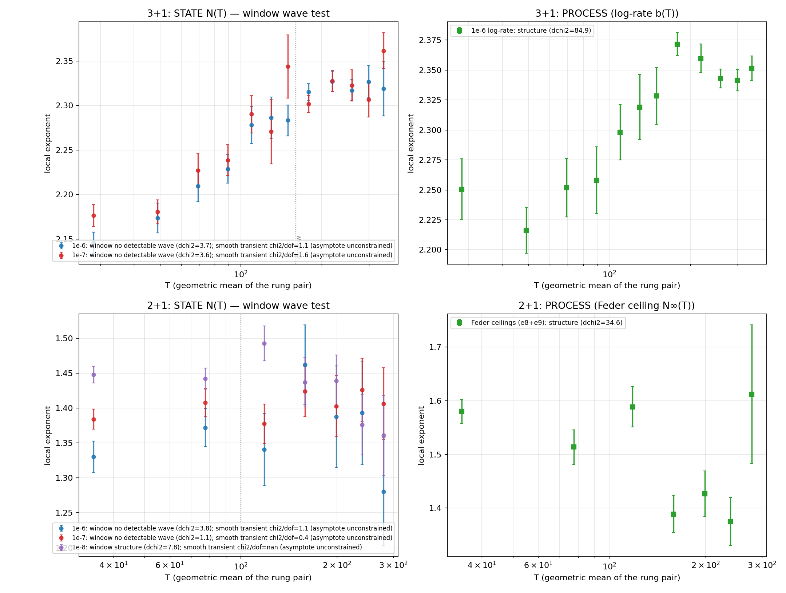

The 7/3 chase ends: the converged 3+1 exponent is cutoff-invariant at 2.321 — and it is not 7/3
converge3d_e7 (sparse engine, T = 200–360 × 5
seeds at 1e-7, stitched with pack3d_e7 for T ≤ 160)
· campaign code
d62c7ea
· chart
301d8e6
Yesterday's converged plateau (D = 2.321 at 1e-6) sat one
cutoff-shift below 7/3, so the sharp question was whether the
+0.016/decade shift seen on the low-T ladders would carry the
converged value to 2.333. The answer is no — because the shift
itself vanishes in the converged window:

Both cutoff arms converge onto the same plateau: 2.3208 ±
0.0008 (1e-6) vs 2.3216 ± 0.0035 (1e-7).
D(3+1) = 2.321, cutoff-invariant. The converged
windows at 1e-6 and 1e-7 agree to Δ = 0.0008 ±
0.0036. The +0.016/decade drift of the full-ladder fits was a
low-T-curvature artifact, exactly like the window dependence
itself.
7/3 is ruled out: 2.3333 sits 15σ above
the 1e-6 value and 3.3σ above the (looser) 1e-7 value,
with no depth drift left to close the gap. Combined with the
logarithmic approach (yesterday: the kinetics have no ceiling to
extrapolate), the converged finite-cutoff plateau is
the number: D = 2.321 ± 0.001, not an
obvious rational.
Fleet notes: the campaign survived a vast.ai host reboot, a
second box's network drop-and-return, and the 3090's mid-run
withdrawal (reserved for another project) — all absorbed
by the store + the new self-healing stall relaunch, with only
duplicated-job waste. The two drained rentals were destroyed
mid-campaign ($75.70 + $15.48 total spend); the last box follows
once this note is published.
Takeaway: both headline exponents are now settled numbers —
2.321 ± 0.001 (3+1, converged and cutoff-invariant)
and 1.434 ± 0.021 (2+1, jamming-limit
extrapolation). D/d = 0.774 vs 0.717: not dimension-universal,
and neither an evident rational. The "why" — including why the
approach kinetics differ so sharply by dimension — is now the
deepest open question. Next: the subpaths campaign.
Dimension-symmetric view — and the two dimensions fail in opposite directions
Same stores as this morning, resliced into a 2×2 grid (Kevin's
suggestion: every chart should exist for both dimensions) ·
chart
7d3a4f4
plot_converge is now a symmetric grid: per dimension,
the local exponent between adjacent rungs at the geometric-mean T
(one series per cutoff), and the fitted exponent vs cutoff depth.
Giving 2+1 the local-slope panel it never had makes the contrast
between the dimensions jump out:

Left column: local exponent vs resolution. Right column: exponent
vs depth. Top: 3+1. Bottom: 2+1.
The dimensions are non-converged in opposite
variables. 3+1's local slope climbs with T and then
plateaus, and the plateau is depth-invariant (2.3208 vs 2.3216):
resolution was the hard direction, depth is free. 2+1's local
slope is flat in T at every cutoff — no
resolution transient at all — but the whole band shifts
upward with each decade of depth (1.393 → 1.407 →
1.440): depth is the hard direction, resolution is free.
That inversion lines up exactly with the approach-law split:
2+1's power-law (Feder) approach makes its cutoff states
systematically shallow (depth matters), while 3+1's logarithmic
densification makes every cutoff state equally
“deep” in rate terms (depth cancels, resolution
rules).
Convention adopted: analysis charts come in dimension-symmetric
pairs from now on — a surplus of comparable graphs beats
a minimum of unique ones.
Chris's wave challenge: no wave — but the plateau is demoted, and 7/3 un-dies
Wave test over all CONVERGE/PACK stores
(analysis/analyze_wave_test.py) · analysis code
11efd71
Chris asked whether the local-exponent curves are slow waves in
log T, with our “converged” window sitting on a crest.
Three tests: a sinusoid-vs-constant comparison restricted to the
claimed window; a smooth saturating-transient fit to the full-range
shape; and the same analysis on the process-level observables
(3+1 log-growth rate b(T), 2+1 Feder ceilings), which carry no
stopping transient.

Left: state N(T) local exponents with window wave tests. Right:
process-level observables (log-rate / Feder ceilings).
No detectable wave. In every claimed window the
best sinusoid fails significance (Δχ² = 3.7 / 3.6
in 3+1; the only marginal case is the five-point 2+1 e8 arm),
and the full-range shape is fully explained by a smooth
monotone transient (χ²/dof ≈ 1) — an
oscillation is statistically unnecessary. Waves with period
≫ the observed window can never be excluded by statistics
alone; only a longer ladder can.
But the plateau is only a window value. The
saturating fit's asymptote is unconstrained by shape (slow-k
transients reaching 2.6+ fit as well as ones plateauing at
2.32): flatness over the 0.35-decade window T = 160–360
is weak evidence of true convergence. Yesterday's
“converged, definitive” framing was too strong.
The rate exponent sits above the state plateau —
at 7/3. The log-growth rate b(T), which carries no
stopping transient, scales with full-range exponent
2.336 ± 0.008 (1e-6) / 2.329 ± 0.007
(1e-7) — consistent with 7/3 ≈ 2.3333 and
~4σ above the state window value 2.3208. Under log
kinetics the state slope should approach the rate exponent from
below, so the state “plateau” is plausibly still
crawling upward, toward the rate value. Not Chris's wave
(nothing comes back down) — but his skepticism about the
plateau was right, and 7/3 is back in play via
the rate route, one day after being declared dead via the state
route.
Decisive next measurement: extend the 3+1 ladder (T = 400–480
fits a 24 GB card on the sparse engine) and harden the rate estimate
(tail-window systematics). The state-vs-rate discrepancy is now the
sharpest number in the project.